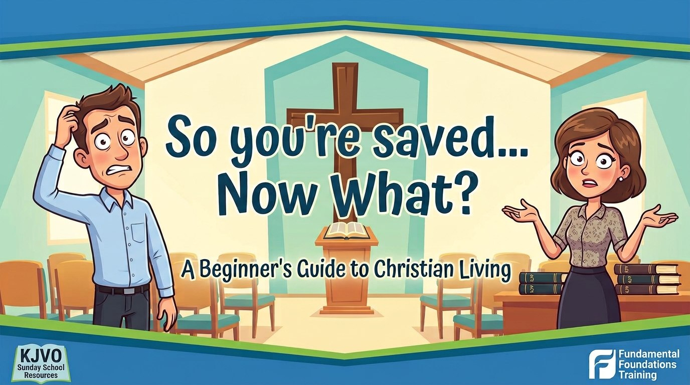
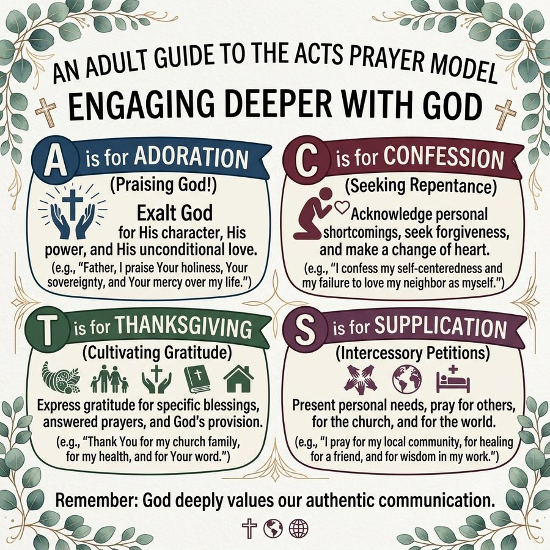

So You’re Saved… Now What?
Seven sessions for the new believer: the gospel, baptism, witnessing, prayer, Bible study, a life that pleases God, and the hope of glory.
As newborn babes, desire the sincere milk of the word, that ye may grow thereby:1 Peter 2:2

Use the arrow keys or swipe to move. Tap any reference to read the verse. The Contents button lists every session.
Session One: the gospel confirmed
Before we talk about growing, let’s make sure the ground is solid. You have already believed the gospel and been saved. This session is not to make you doubt that, but to root it so deep that no one, including the devil himself, can shake it loose. We begin where the Bible begins the good news: God’s love, man’s need, and Christ’s finished work.
The Gospel in a verse
For God so loved the world, that he gave his only begotten Son, that whosoever believeth in him should not perish, but have everlasting life. For God sent not his Son into the world to condemn the world; but that the world through him might be saved. He that believeth on him is not condemned: but he that believeth not is condemned already, because he hath not believed in the name of the only begotten Son of God.John 3:16-18
Notice the shape of it: God’s love is the source, Christ’s gift is the means, and belief, simple trust in Him, is the only response required. Not belief plus baptism, not belief plus church membership, not belief plus a certain feeling. Belief alone, in Him alone.
The Romans Road
Paul’s letter to the Romans lays the same truth out step by step. Walk it slowly. This is the road you walked to get saved, and it is the road you will walk with others.
All have sinned
For all have sinned, and come short of the glory of God;Romans 3:23
The wages of sin
For the wages of sin is death; but the gift of God is eternal life through Jesus Christ our Lord.Romans 6:23
Christ died for us
But God commendeth his love toward us, in that, while we were yet sinners, Christ died for us.Romans 5:8
Confess and believe
That if thou shalt confess with thy mouth the Lord Jesus, and shalt believe in thine heart that God hath raised him from the dead, thou shalt be saved. For with the heart man believeth unto righteousness; and with the mouth confession is made unto salvation.Romans 10:9-10
For whosoever shall call upon the name of the Lord shall be saved.Romans 10:13
You can know you have eternal life
He that believeth on the Son of God hath the witness in himself: he that believeth not God hath made him a liar; because he believeth not the record that God gave of his Son. And this is the record, that God hath given to us eternal life, and this life is in his Son. He that hath the Son hath life; and he that hath not the Son of God hath not life. These things have I written unto you that believe on the name of the Son of God; that ye may know that ye have eternal life, and that ye may believe on the name of the Son of God.1 John 5:10-13
Teaching point. John didn’t write “that ye may hope” or “that ye may wish”; he wrote that ye may know. Assurance isn’t pride; it’s simply taking God at His word. If He said it, and you believed it, it’s settled.
Eternal security: once saved, kept
If salvation depended on you keeping yourself saved, none of us would make it. But salvation was never a transaction you maintain; it’s a gift God keeps. Nothing in all creation is strong enough to undo what Christ has done.
Who shall separate us from the love of Christ? shall tribulation, or distress, or persecution, or famine, or nakedness, or peril, or sword? As it is written, For thy sake we are killed all the day long; we are accounted as sheep for the slaughter. Nay, in all these things we are more than conquerors through him that loved us. For I am persuaded, that neither death, nor life, nor angels, nor principalities, nor powers, nor things present, nor things to come, Nor height, nor depth, nor any other creature, shall be able to separate us from the love of God, which is in Christ Jesus our Lord.Romans 8:35-39
Everything that follows in this course (baptism, prayer, Bible study, godly living) is not how you stay saved. It’s how a saved person grows in faith and grace.
Baptism: an outward sign
Baptism saves no one. You were already saved the moment you believed. But the very first thing the early church did with a new believer was baptize him. It’s not a suggestion for the “serious” Christian later on; it’s the normal, immediate next step for every believer. Think of it as a public wedding after a private engagement: the commitment was already real, but now everyone gets to see it. Or think of a wedding ring: that ring is the outward sign, but without it you are still married. Baptism works the same way: it doesn’t create the marriage between you and Christ, it displays one that already exists.
Two reasons to be baptized
An outward sign to others
It tells the world, without a word, that you have died to your old life and been raised to a new one (buried under the water, raised up out of it).
An act of obedience to God
Christ commanded it, and a saved heart wants to obey, not to earn anything, but because it loves the One who saved it.
What the picture means
Why go under the water at all? Because baptism isn’t just a ritual. It’s a picture Paul explains in plain terms: going down into the water pictures Christ’s death and burial, and coming back up pictures His resurrection. You are acting out the gospel with your own body.
Know ye not, that so many of us as were baptized into Jesus Christ were baptized into his death? Therefore we are buried with him by baptism into death: that like as Christ was raised up from the dead by the glory of the Father, even so we also should walk in newness of life. For if we have been planted together in the likeness of his death, we shall be also in the likeness of his resurrection:Romans 6:3-5
A new believer gets baptized: the Ethiopian
Acts 8 gives us the clearest picture in Scripture of what happens the moment a new convert understands the gospel. Read it as one flowing account.
And the angel of the Lord spake unto Philip, saying, Arise, and go toward the south unto the way that goeth down from Jerusalem unto Gaza, which is desert. And he arose and went: and, behold, a man of Ethiopia, an eunuch of great authority under Candace queen of the Ethiopians, who had the charge of all her treasure, and had come to Jerusalem for to worship, Was returning, and sitting in his chariot read Esaias the prophet. Then the Spirit said unto Philip, Go near, and join thyself to this chariot. And Philip ran thither to him, and heard him read the prophet Esaias, and said, Understandest thou what thou readest? And he said, How can I, except some man should guide me? And he desired Philip that he would come up and sit with him. The place of the scripture which he read was this, He was led as a sheep to the slaughter; and like a lamb dumb before his shearer, so opened he not his mouth: In his humiliation his judgment was taken away: and who shall declare his generation? for his life is taken from the earth. And the eunuch answered Philip, and said, I pray thee, of whom speaketh the prophet this? of himself, or of some other man? Then Philip opened his mouth, and began at the same scripture, and preached unto him Jesus.Acts 8:26-35
What doth hinder me to be baptized?
And as they went on their way, they came unto a certain water: and the eunuch said, See, here is water; what doth hinder me to be baptized? And Philip said, If thou believest with all thine heart, thou mayest. And he answered and said, I believe that Jesus Christ is the Son of God. And he commanded the chariot to stand still: and they went down both into the water, both Philip and the eunuch; and he baptized him. And when they were come up out of the water, the Spirit of the Lord caught away Philip, that the eunuch saw him no more: and he went on his way rejoicing.Acts 8:36-39
Notice what the eunuch did the moment he understood: he didn’t wait for a “right time,” a special service, or years of preparation. There was water. He believed. He was baptized. He went on his way rejoicing. That’s the pattern for you too.
Going on toward maturity
Baptism is a foundation stone, not the finish line. The writer of Hebrews names it as one of several “first principles” a believer lays down once, and then builds on for the rest of life. The next five sessions of this course are that building.
Therefore leaving the principles of the doctrine of Christ, let us go on unto perfection; not laying again the foundation of repentance from dead works, and of faith toward God, Of the doctrine of baptisms, and of laying on of hands, and of resurrection of the dead, and of eternal judgment. And this will we do, if God permit.Hebrews 6:1-3
Every believer a witness
The fruit of the righteous is a tree of life; and he that winneth souls is wise.Proverbs 11:30
Here’s good news you may not have heard yet: you don’t need years of Bible school to point someone to Christ. You just need to have met Him. Scripture’s clearest illustration of this is a woman who had known Jesus for less than an hour before she was leading her whole town to Him.
The woman at the well
John 4:4-42, in brief: Jesus, tired from His journey, stops at a well in Samaria at noon and asks a Samaritan woman for a drink, a request that broke two social barriers at once, since Jews had no dealings with Samaritans, and a rabbi did not speak to a woman alone in public. He offers her “living water,” and when she asks for it, He gently exposes the real thirst in her life: five failed marriages and a man she isn’t married to now. Rather than running from that, she runs toward Him, perceiving Him as a prophet, then questioning Him about worship, and finally hearing Him say plainly, “I that speak unto thee am he,” the Messiah Himself.
She does not wait
She does not go get trained. She does not wait until she has her own life sorted out. She leaves her water pot standing right there and goes straight into the city, telling everyone, “Come, see a man, which told me all things that ever I did: is not this the Christ?” And John tells us many of the Samaritans believed on Him because of the woman’s testimony, before they ever met Jesus themselves. A woman with a broken past and no theological training became the first missionary to Samaria, simply by telling what she knew.
Teaching point. You already know enough to win someone to Christ. You know that you were lost, that Jesus saved you, and how. That is a testimony no one can argue with, and it’s exactly what the woman at the well had.
The Great Commission
And Jesus came and spake unto them, saying, All power is given unto me in heaven and in earth. Go ye therefore, and teach all nations, baptizing them in the name of the Father, and of the Son, and of the Holy Ghost: Teaching them to observe all things whatsoever I have commanded you: and, lo, I am with you alway, even unto the end of the world. Amen.Matthew 28:18-20
Witnesses unto the uttermost part
But ye shall receive power, after that the Holy Ghost is come upon you: and ye shall be witnesses unto me both in Jerusalem, and in all Judaea, and in Samaria, and unto the uttermost part of the earth.Acts 1:8
This wasn’t given only to preachers. It was given to every believer in the room (fishermen, tax collectors, ordinary people) and it still stands today. Soul-winning is not a specialty; it’s the normal Christian life.
Living so your witness isn’t undone
What you say about Christ matters. So does how you live in front of the people watching you say it.
Chaste conversation
Likewise, ye wives, be in subjection to your own husbands; that, if any obey not the word, they also may without the word be won by the conversation of the wives; While they behold your chaste conversation coupled with fear.1 Peter 3:1-2
Let your light so shine
Ye are the light of the world. A city that is set on an hill cannot be hid. Neither do men light a candle, and put it under a bushel, but on a candlestick; and it giveth light unto all that are in the house. Let your light so shine before men, that they may see your good works, and glorify your Father which is in heaven.Matthew 5:14-16
Abstain from all appearance of evil
Abstain from all appearance of evil.1 Thessalonians 5:22
Conversation means conduct
“Chaste conversation” here doesn’t just mean clean speech. Conversation in the King James English means your whole conduct, your manner of life. A watching world reads that conduct like a letter, long before it ever reads a Bible verse. Guard it carefully; a single careless season can silence years of testimony.
Prayer: talking with the Father
Prayer is simply talking to God as your Father, because that’s exactly what He’s become to you. Not a formula to unlock blessings, not a performance for others to hear, but a relationship. Paul tells believers plainly to pray without ceasing (): not one long unbroken prayer all day, but a heart that stays in conversation with God through everything the day brings.
The model prayer
When His disciples asked Jesus to teach them to pray, He didn’t hand them a theory. He gave them a pattern.
After this manner therefore pray ye: Our Father which art in heaven, Hallowed be thy name. Thy kingdom come. Thy will be done in earth, as it is in heaven. Give us this day our daily bread. And forgive us our debts, as we forgive our debtors. And lead us not into temptation, but deliver us from evil: For thine is the kingdom, and the power, and the glory, for ever. Amen.Matthew 6:9-13
The ACTS pattern
Bible teachers have long noticed that the Lord’s Prayer naturally breaks into four movements, an easy pattern to carry into your own prayer time, remembered by the word ACTS.

Psalms for the pattern: A and C
The Psalms give us some of the best examples in Scripture of each part of that pattern. Read each one slowly. Better yet, pray it back to God in your own words.
A, Adoration (praising God for who He is)
O Lord, our Lord, how excellent is thy name in all the earth! who hast set thy glory above the heavens.Psalm 8:1
Great is the Lord, and greatly to be praised; and his greatness is unsearchable.Psalm 145:3
C, Confession (agreeing with God about sin)
Have mercy upon me, O God, according to thy lovingkindness: according unto the multitude of thy tender mercies blot out my transgressions. Wash me throughly from mine iniquity, and cleanse me from my sin. For I acknowledge my transgressions: and my sin is ever before me.Psalm 51:1-3
I acknowledged my sin unto thee, and mine iniquity have I not hid. I said, I will confess my transgressions unto the Lord; and thou forgavest the iniquity of my sin. Selah.Psalm 32:5
Psalms for the pattern: T and S
T, Thanksgiving (gratitude for what He has done)
Enter into his gates with thanksgiving, and into his courts with praise: be thankful unto him, and bless his name.Psalm 100:4
Bless the Lord, O my soul: and all that is within me, bless his holy name. Bless the Lord, O my soul, and forget not all his benefits:Psalm 103:1-2
S, Supplication (asking for what we need)
Bow down thine ear, O Lord, hear me: for I am poor and needy. Preserve my soul; for I am holy: O thou my God, save thy servant that trusteth in thee.Psalm 86:1-2
Teach me to do thy will; for thou art my God: thy spirit is good; lead me into the land of uprightness.Psalm 143:10
When you don’t know how to pray
Likewise the Spirit also helpeth our infirmities: for we know not what we should pray for as we ought: but the Spirit itself maketh intercession for us with groanings which cannot be uttered. And he that searcheth the hearts knoweth what is the mind of the Spirit, because he maketh intercession for the saints according to the will of God.Romans 8:26-27
Teaching point. Yes, you can pray amiss. warns that asking with wrong motives, purely to spend it on yourself, gets you nowhere. But don’t let that make you afraid to pray. The Spirit corrects and carries your prayer even when your words fall short, and God answers prayer with what you actually need, not always what you asked for.
Asking amiss, and a Father who gives
Asking amiss
Ye ask, and receive not, because ye ask amiss, that ye may consume it upon your lusts.James 4:3
God shall supply all your need
But my God shall supply all your need according to his riches in glory by Christ Jesus.Philippians 4:19
A Father who gives good gifts
Or what man is there of you, whom if his son ask bread, will he give him a stone? Or if he ask a fish, will he give him a serpent? If ye then, being evil, know how to give good gifts unto your children, how much more shall your Father which is in heaven give good things to them that ask him?Matthew 7:9-11
The confidence we have in prayer
And this is the confidence that we have in him, that, if we ask any thing according to his will, he heareth us: And if we know that he hear us, whatsoever we ask, we know that we have the petitions that we desired of him.1 John 5:14-15
Bible study: feeding on the word
Prayer is you talking to God. Bible study is God talking to you. A believer who prays but never opens the Word ends up with a lot of opinions and very little truth to test them against. You need both.
Study to shew thyself approved unto God, a workman that needeth not to be ashamed, rightly dividing the word of truth. But shun profane and vain babblings: for they will increase unto more ungodliness.2 Timothy 2:15-16
“Study” here isn’t a suggestion to skim. It means to work at it, the way a tradesman works at his craft until he no longer has to guess. You are not expected to master the whole Bible this week. You are expected to start, and to keep going.
Desire, meditate, walk by the light
Desire the sincere milk of the word
As newborn babes, desire the sincere milk of the word, that ye may grow thereby:1 Peter 2:2
Meditate therein day and night
This book of the law shall not depart out of thy mouth; but thou shalt meditate therein day and night, that thou mayest observe to do according to all that is written therein: for then thou shalt make thy way prosperous, and then thou shalt have good success.Joshua 1:8
A lamp unto my feet
Thy word is a lamp unto my feet, and a light unto my path.Psalm 119:105
A simple start
A simple start. Read a little every day rather than a lot once a week. The Gospel of John is a good place to begin. It was written, in John’s own words, “that ye might believe” and, having believed, keep believing more deeply. And a caution: reading a devotional, a random verse of the day, or a one-line calendar entry is not a substitute for reading the Bible itself with a plan and a purpose, taking each passage in its context. Those tools are fine as seasoning; they were never meant to be the meal.
A life that pleases God
God’s commandments were never meant to cage you. They were meant to protect you and, quite literally, to lengthen your days. The very first commandment with a promise attached tells us so directly.
Children, obey your parents in the Lord: for this is right. Honour thy father and mother; which is the first commandment with promise; That it may be well with thee, and thou mayest live long on the earth.Ephesians 6:1-3
The commandment restated
Honour thy father and thy mother, as the Lord thy God hath commanded thee; that thy days may be prolonged, and that it may go well with thee, in the land which the Lord thy God giveth thee.Deuteronomy 5:16
The benefit is the point
Every command God gives is aimed at your good, not just your obedience. He isn’t fencing you in. He’s fencing out the things that would wreck your life. A few examples:
- Don’t lie, because trust, once broken, is slow to rebuild; guard it instead.
- Don’t steal, because a life built on taking never has anything left to give.
- Don’t covet, because a heart fixed on what it doesn’t have can never enjoy what it does.
- Be sober, because a clear head is what lets you make good decisions in the moment they actually matter.
- Don’t commit adultery or fornication. It is a sin against your own body; it doesn’t just wound others, it wounds you.
God is not trying to make your life smaller. He’s showing you the path that actually works.
Your life is an open book test
People may never read the Bible you carry, but they are always reading you. That’s not a burden; it’s the privilege of being useful to God. You might be the only Bible they see.
Known and read of all men
Ye are our epistle, known and read of all men
Ye are our epistle written in our hearts, known and read of all men: Forasmuch as ye are manifestly declared to be the epistle of Christ ministered by us, written not with ink, but with the Spirit of the living God; not in tables of stone, but in fleshy tables of the heart.2 Corinthians 3:2-3
All scripture is given by inspiration of God
All scripture is given by inspiration of God, and is profitable for doctrine, for reproof, for correction, for instruction in righteousness: That the man of God may be perfect, throughly furnished unto all good works.2 Timothy 3:16-17
Quick, powerful, and sharper than a sword
For the word of God is quick, and powerful, and sharper than any twoedged sword, piercing even to the dividing asunder of soul and spirit, and of the joints and marrow, and is a discerner of the thoughts and intents of the heart.Hebrews 4:12
The Book is open to you
But there’s a second sense in which your life is an open book: the Book itself is open to you. God didn’t leave you guessing about how to live. He wrote down the answer to nearly every question you’ll face: money, marriage, work, suffering, the future. Scripture isn’t a restriction on a good life; it’s the blueprint for one. The point of reading it isn’t to collect information. It’s to find out what God thinks, so you can walk the path that actually leads somewhere good.
Trust in the Lord with all thine heart; and lean not unto thine own understanding. In all thy ways acknowledge him, and he shall direct thy paths.Proverbs 3:5-6
Expect trouble, and a way through it
Godly living was never promised to be easy. Christ said it plainly, and Paul confirmed it: living for Him will bring resistance, sometimes from the last people you’d expect.
All that will live godly shall suffer persecution
Yea, and all that will live godly in Christ Jesus shall suffer persecution.2 Timothy 3:12
A way to escape temptation
There hath no temptation taken you but such as is common to man: but God is faithful, who will not suffer you to be tempted above that ye are able; but will with the temptation also make a way to escape, that ye may be able to bear it.1 Corinthians 10:13
A sword, not always peace
Think not that I am come to send peace on earth: I came not to send peace, but a sword. For I am come to set a man at variance against his father, and the daughter against her mother, and the daughter in law against her mother in law. And a man’s foes shall be they of his own household.Matthew 10:34-36
Division, even in a household
Suppose ye that I am come to give peace on earth? I tell you, Nay; but rather division: For from henceforth there shall be five in one house divided, three against two, and two against three. The father shall be divided against the son, and the son against the father; the mother against the daughter, and the daughter against the mother; the mother in law against her daughter in law, and the daughter in law against her mother in law.Luke 12:51-53
When family pushes back
Teaching point. If a family member pushes back on your new faith, you are not failing. You are exactly where Jesus said some believers would be. Stay loving. Stay patient. Don’t force the issue, but don’t hide the change God has made in you either.
Love, in every direction
The proof that we belong to Christ is not how well we argue doctrine. It’s how we love the people around us.
The brethren
Your spouse
Your parents, if you’re a child under their roof
Those in authority over you
Your boss
Your enemies
yes, even themWhen you sin (because you will)
Nobody in this course, including the one teaching it, has stopped sinning. Even Paul, decades into his walk with Christ, wrote honestly about losing the fight against his own flesh.
O wretched man that I am! who shall deliver me from the body of this death?Romans 7:24
He doesn’t leave himself there. The very next breath answers the question, and the chapter that follows is the answer in full.
No condemnation
There is therefore now no condemnation to them which are in Christ Jesus, who walk not after the flesh, but after the Spirit. For the law of the Spirit of life in Christ Jesus hath made me free from the law of sin and death. For what the law could not do, in that it was weak through the flesh, God sending his own Son in the likeness of sinful flesh, and for sin, condemned sin in the flesh: That the righteousness of the law might be fulfilled in us, who walk not after the flesh, but after the Spirit.Romans 8:1-4
Teaching point. Your flesh will keep sinning until the day you’re glorified. That’s not news, and it isn’t cause for despair. No temptation that comes at you is anything new; it’s common to everyone. But your standing before God isn’t decided by your flesh anymore. In Christ, you’ve been given a new man that isn’t a slave to sin, even while the old nature keeps fighting for control.
New every morning
No temptation but such as is common to man
There hath no temptation taken you but such as is common to man: but God is faithful, who will not suffer you to be tempted above that ye are able; but will with the temptation also make a way to escape, that ye may be able to bear it.1 Corinthians 10:13
His mercies are new every morning
It is of the Lord’s mercies that we are not consumed, because his compassions fail not. They are new every morning: great is thy faithfulness.Lamentations 3:22-23
Take up his cross daily
And he said to them all, If any man will come after me, let him deny himself, and take up his cross daily, and follow me.Luke 9:23
Falls seven times, rises again
For a just man falleth seven times, and riseth up again: but the wicked shall fall into mischief.Proverbs 24:16
As far as the east is from the west
As far as the east is from the west, so far hath he removed our transgressions from us.Psalm 103:12
Following Christ was never a one-time decision that runs on autopilot. It’s a daily choice to lay the old self down again. Some days that means starting over more than once. That’s not failure; that’s the Christian life. Mercy meets you fresh every morning, and a fall doesn’t define you. Getting back up does.
Every sin, past, present and future, already covered
Even as David also describeth the blessedness of the man, unto whom God imputeth righteousness without works, Saying, Blessed are they whose iniquities are forgiven, and whose sins are covered. Blessed is the man to whom the Lord will not impute sin.Romans 4:6-8
That’s not imputation one sin at a time. It’s a settled account. Every sin you had committed, are committing, and will ever commit was already covered when God declared you righteous in Christ. That truth isn’t a license to sin freely; it’s the very thing that makes honest confession possible instead of terrifying.
If we confess our sins, he is faithful and just to forgive us our sins, and to cleanse us from all unrighteousness.1 John 1:9
Confession isn’t groveling to earn back what you never lost. It’s agreeing with God about what happened, so fellowship stays open and clean.
Walking in the Spirit
The real answer to sin was never willpower. It’s who you’re walking with.
Walk in the Spirit
This I say then, Walk in the Spirit, and ye shall not fulfil the lust of the flesh.Galatians 5:16
The fruit of the Spirit
But the fruit of the Spirit is love, joy, peace, longsuffering, gentleness, goodness, faith, Meekness, temperance: against such there is no law.Galatians 5:22-23
That fruit isn’t something you manufacture by trying harder. It grows out of walking close to Him. The more you do, the less the flesh has room to win.
Don’t do this alone
Not forsaking the assembling of yourselves
And let us consider one another to provoke unto love and to good works: Not forsaking the assembling of ourselves together, as the manner of some is; but exhorting one another: and so much the more, as ye see the day approaching.Hebrews 10:24-25
Charity unfeigned
Seeing ye have purified your souls in obeying the truth through the Spirit unto unfeigned love of the brethren, see that ye love one another with a pure heart fervently:1 Peter 1:22
Charity suffereth long
Charity suffereth long, and is kind; charity envieth not; charity vaunteth not itself, is not puffed up, Doth not behave itself unseemly, seeketh not her own, is not easily provoked, thinketh no evil; Rejoiceth not in iniquity, but rejoiceth in the truth; Beareth all things, believeth all things, hopeth all things, endureth all things.1 Corinthians 13:4-7
Church is not an optional accessory to the Christian life. It’s where you’re loved, checked, fed, and kept from drifting. No believer in the New Testament grows alone.
Sober and vigilant
Your adversary the devil
Be sober, be vigilant; because your adversary the devil, as a roaring lion, walketh about, seeking whom he may devour:1 Peter 5:8
Let us watch and be sober
Therefore let us not sleep, as do others; but let us watch and be sober.1 Thessalonians 5:6
As the day of Christ’s return draws nearer, Scripture doesn’t tell us to relax. It tells us to stay alert, clear-headed, and ready.
The hope of glory
We close where every believer’s story is heading. Bible teachers disagree on the exact timing of certain end-times events, and this course won’t try to settle that argument for you. But on the big picture, God’s people have always agreed: Christ is coming back, the dead in Him will rise, we will be with Him forever, and every wrong will finally be made right.
The resurrection
Behold, I shew you a mystery; We shall not all sleep, but we shall all be changed, In a moment, in the twinkling of an eye, at the last trump: for the trumpet shall sound, and the dead shall be raised incorruptible, and we shall be changed. For this corruptible must put on incorruption, and this mortal must put on immortality. So when this corruptible shall have put on incorruption, and this mortal shall have put on immortality, then shall be brought to pass the saying that is written, Death is swallowed up in victory. O death, where is thy sting? O grave, where is thy victory? The sting of death is sin; and the strength of sin is the law. But thanks be to God, which giveth us the victory through our Lord Jesus Christ. Therefore, my beloved brethren, be ye stedfast, unmoveable, always abounding in the work of the Lord, forasmuch as ye know that your labour is not in vain in the Lord.1 Corinthians 15:51-58
Caught up together
For the Lord himself shall descend from heaven with a shout, with the voice of the archangel, and with the trump of God: and the dead in Christ shall rise first: Then we which are alive and remain shall be caught up together with them in the clouds, to meet the Lord in the air: and so shall we ever be with the Lord. Wherefore comfort one another with these words.1 Thessalonians 4:16-18
Teaching point. Paul doesn’t end this passage with a debate. He ends it with “comfort one another with these words.” Whatever the exact order of events, this doctrine was given to comfort grieving believers, not to start arguments among them. Hold your view with conviction and hold your brother with grace.
Rule and reign
And I saw thrones, and they sat upon them, and judgment was given unto them: and I saw the souls of them that were beheaded for the witness of Jesus, and for the word of God, and which had not worshipped the beast, neither his image, neither had received his mark upon their foreheads, or in their hands; and they lived and reigned with Christ a thousand years. But the rest of the dead lived not again until the thousand years were finished. This is the first resurrection. Blessed and holy is he that hath part in the first resurrection: on such the second death hath no power, but they shall be priests of God and of Christ, and shall reign with him a thousand years.Revelation 20:4-6
New heaven, new earth
And I saw a new heaven and a new earth: for the first heaven and the first earth were passed away; and there was no more sea. And I John saw the holy city, new Jerusalem, coming down from God out of heaven, prepared as a bride adorned for her husband. And I heard a great voice out of heaven saying, Behold, the tabernacle of God is with men, and he will dwell with them, and they shall be his people, and God himself shall be with them, and be their God. And God shall wipe away all tears from their eyes; and there shall be no more death, neither sorrow, nor crying, neither shall there be any more pain: for the former things are passed away.Revelation 21:1-4
We shall be like Him
We shall be like him
Beloved, now are we the sons of God, and it doth not yet appear what we shall be: but we know that, when he shall appear, we shall be like him; for we shall see him as he is.1 John 3:2
New heavens and a new earth, wherein dwelleth righteousness
Nevertheless we, according to his promise, look for new heavens and a new earth, wherein dwelleth righteousness.2 Peter 3:13
That blessed hope
Looking for that blessed hope, and the glorious appearing of the great God and our Saviour Jesus Christ;Titus 2:13
This is your future. Live like it’s true, because it is.